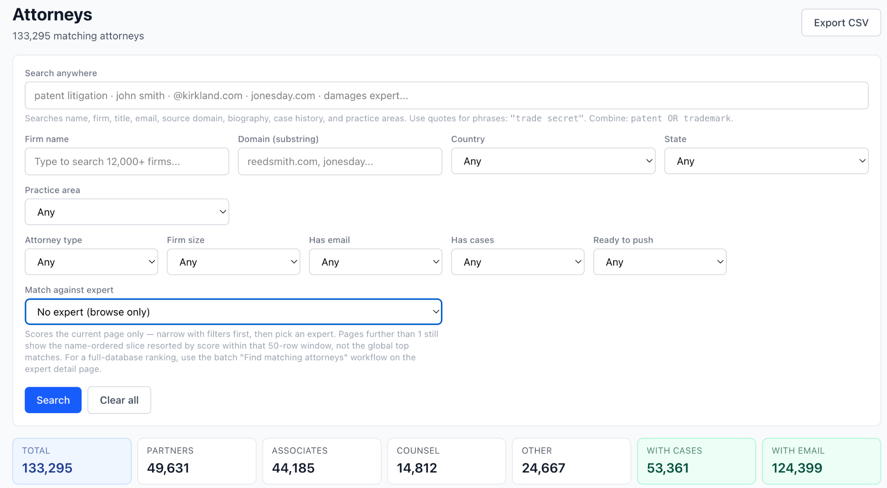
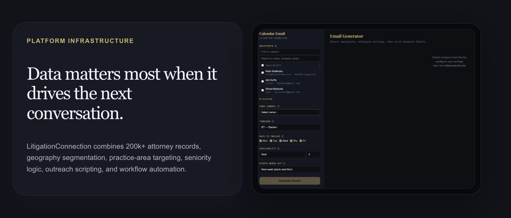

1
Done-for-you appointment setting
We find, call, qualify, and book appointments with relevant attorneys.
LitigationConnection is both a professional appointment-setting service and an AI-driven platform of over 200k attorneys across the U.S., segmented by geography, practice, and seniority.
Clients can use the service layer, the platform layer, or both.
We find, call, qualify, and book appointments with relevant attorneys.
Search attorneys, generate AI matching criteria, and create cold call and email scripts.
Follow-up systems, email generation, calendar coordination, and segmentation workflows.
Search, segment, export, and match attorneys against expert criteria.
The platform supports attorney discovery across geography, practice area, firm attributes, email availability, case history, and expert matching criteria.

Attorney intelligence designed for matching, outreach, and execution.
Search attorneys, filter by geography and practice, evaluate firm and attorney attributes, match against expert criteria, and export data for outreach workflows.

Workflow systems can parse information from PACER and CourtListener to identify attorneys representing plaintiffs and defendants.
Identify attorneys and matter-side context from legal data sources.
Generate targeting logic based on practice, geography, seniority, and matter fit.
Generate practical outreach messaging for segmented attorney groups.